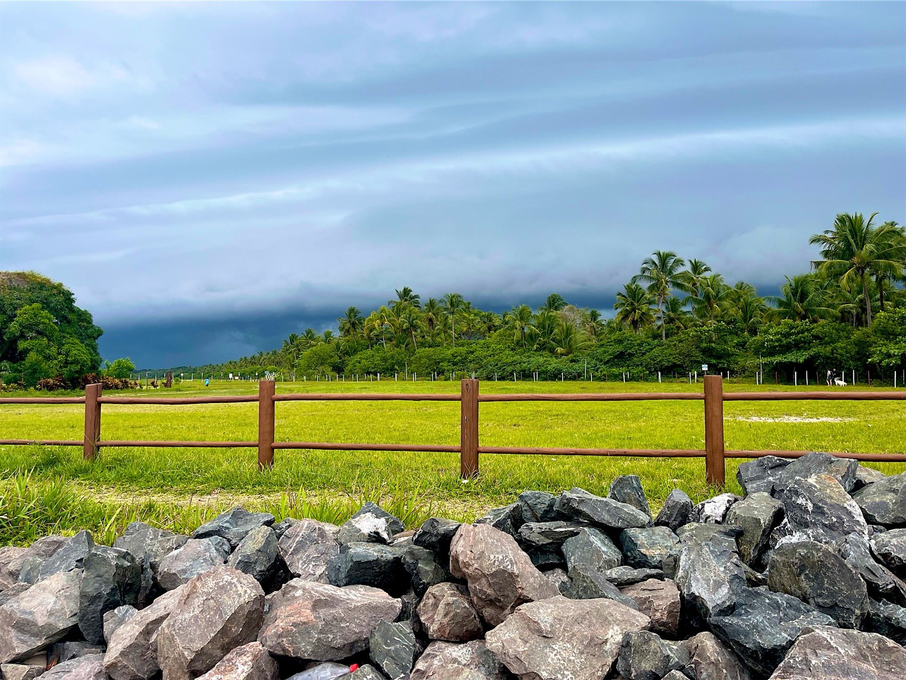
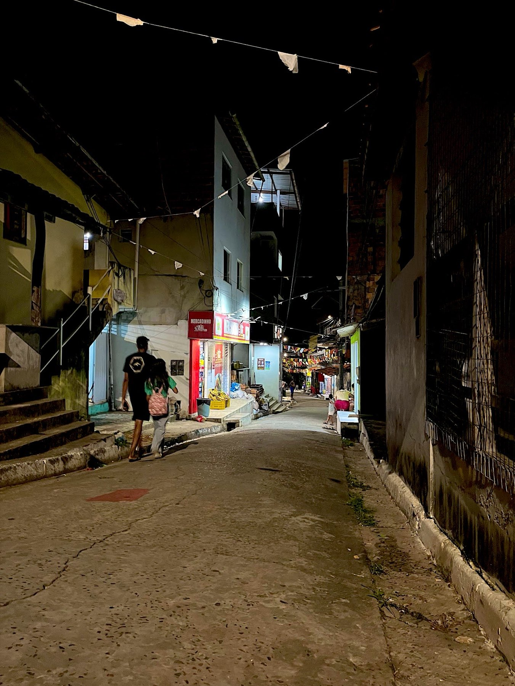

Why take the bus in Brazil
Brazil is enormous, and long-distance buses (ônibus rodoviários) connect almost every town — including routes between states that flights don’t serve directly. Modern coaches are air-conditioned, have toilets, and the best classes are genuinely comfortable. They’re far cheaper than flying to small destinations like Lençóis, Itacaré or Trancoso, and an overnight bus saves a night of accommodation.

Seat classes explained
- Convencional: standard reclining seats, basic service, usually with a toilet. Fine for short daytime trips.
- Executivo: more legroom and recline, air-conditioning, sometimes USB sockets.
- Semi-leito: fewer, wider seats with deep recline and leg rests.
- Leito (and leito-cama): the top class. Wide individual seats that recline almost flat — like a small individual bed — often with a blanket and pillow. Leito-cama goes fully flat on some routes.
Our advice: go for leito whenever possible. On a night bus it is the difference between arriving wrecked and arriving ready for the beach. Leito seats sell out first, so book early.
Key routes from Salvador
- Salvador → Lençóis (Chapada Diamantina): Rápido Federal runs the route with morning, afternoon and night departures (around 8am, 1pm and 11pm). About 6–7 hours. Fares seen in 2026: roughly R$140 convencional, R$190 executivo and R$200–280 leito.
- Salvador → Ilhéus (for Itacaré): about 6–7 hours overnight, then about 1–1.5 hours by local bus or transfer to Itacaré. Alternatively, cross to Itaparica by ferry and take a bus south from Bom Despacho.
- Salvador → Porto Seguro (for Trancoso, Arraial d’Ajuda): a long overnight route of around 11–12 hours — this is where leito really pays off.
- Salvador → Praia do Forte: short regional buses and vans along the coast road, about 1.5 hours.
Schedules and fares change; check current times on the operator’s site or a booking app.

How to book
Buy tickets on the bus company’s website or through booking apps such as ClickBus and Buson, which compare companies and classes. You’ll need your passport details. Print or screenshot the ticket, and arrive at least 30 minutes early — longer around holidays. Buses during Carnival, Christmas–New Year, Easter, São João (June) and July school holidays sell out well in advance.
Salvador’s bus station
Salvador’s Rodoviária is the hub for interstate and long-distance buses. Use Uber, 99 or a registered taxi to get there, especially at night, and keep your bags close in the busy halls. Ferry and bus connections for the south coast via Itaparica leave from the Bom Despacho terminal on the island.
Stops along the way
Long-distance buses stop at roadside restaurants and bus stations every few hours, so you can stretch, eat and use a proper bathroom. Stops are short — usually 15 to 30 minutes — so note the departure time and stay close. Some bus stations even have showers, though we never saw anyone using them.

What to bring
- Passport or ID (checked at boarding)
- A sweater or light blanket — the air-conditioning is strong
- Earplugs and an eye mask for night buses
- Water and snacks
- A small bag with valuables that stays with you
- Small cash for rest-stop food
Safety on the road
Long-distance coaches are generally safe. Keep your phone, passport and money on you rather than in the overhead rack or hold, use the luggage tag system for checked bags, and arrive and depart at night by app ride or registered taxi rather than walking. For rural destinations like Chapada Diamantina, daytime buses are more pleasant and let you see the landscape.
Prices, schedules and rules checked November 2026. They change often in Bahia, so confirm with the operator or official source before you go.

Frequently asked questions
What is a leito bus seat in Brazil?
Leito is the top long-distance bus class in Brazil: a wide individual seat that reclines almost flat, like a small bed, usually with a blanket and pillow. It is ideal for overnight trips.
How long is the bus from Salvador to Lençóis?
About 6 to 7 hours with Rápido Federal, with morning, afternoon and overnight departures. Fares range from roughly R$140 for a standard seat to R$200–280 for leito.
Do long-distance buses in Brazil stop for breaks?
Yes, buses stop at roadside restaurants and stations every few hours, usually for 15 to 30 minutes. Some stations also have showers.
Where do I buy bus tickets in Brazil?
On the bus company’s website or booking apps such as ClickBus and Buson. Have your passport details ready and book early around holidays.